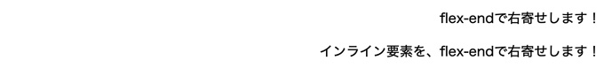
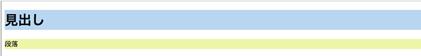
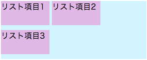
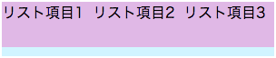

CSSで行揃え
- text-align: left;
- text-align: center;
- text-align: right;
- text-align: justify;
要素（テキスト）を左寄せ
- テキスト（行）をブロック内の左央に配置
- すべての要素の初期値
要素（テキスト）を中央寄せ
- テキスト（行）をブロック内の中央に配置
- ２行以上の段落的な表現ではなく、１行で完結する文章に向いている行揃え
要素（テキスト）を右寄せ
- テキスト（行）をブロック内の右に配置
text-alignプロパティで文章を右寄せ
- text-alignは、ブロック要素などの水平方向に対して配置を決めることができます
- text-align: right;を指定する
- inline要素の場合はdisplay: block;でブロックレベル要素に変更する
<p>text-alignで右寄せします！</p> <span>インライン要素を、text-alignで右寄せします！</span>
/* text-alignで右寄せします。 */ p { text-align: right; } /* インラインの場合 */ span { text-align: right; display: block; }
margin-left、margin-rightプロパティで文章を右寄せ
- margin-leftは、要素の左側に余白を指定します。対してmargin-rightは要素の右側に余白を指定します
- margin-right: 0;を指定する
- margin-left: auto;を指定する
- widthの値を設定する
- inline要素の場合はdisplay: block;でブロックレベル要素に変更する
<p>marginで右寄せします！</p> <span>インライン要素を、marginで右寄せします！</span>
/* margin で右寄せします。 */ p { margin-right: 0; margin-left: auto; width: 30%; } span { margin-right: 0; margin-left: auto; width: 30%; display: block; }
flexプロパティで文章を右寄せ
<p>flex-endで右寄せします！</p> <span>インライン要素を、flex-endで右寄せします！</span>
/* flex で右寄せします。 */ p { display: flex; justify-content: flex-end; } span { display: flex; justify-content: flex-end; }

ブロックレベル要素とインラインレベル要素
- 現在、「HTML Living Standard」にはこの呼び方と概念は存在しませんが、ブラウザは表示するときのCSSの解釈はこの２つを基準にして表示します
ブロックレベル要素
- 見出し（h1〜h6要素）、段落（p要素）、表（table要素）、リスト（ul、ol、dl要素）などが該当します
- ブロックレベル要素は、その前後で改行表示されます
- ブロックレベル要素は、デフォルト状態で親要素と同じ幅を持っています
- 親要素より小さい幅を指定しても前後で開業され、横並びに配置できません
<!DOCTYPE html> <html lang="ja"> <head> <meta charset="utf-8"> <title>ブロックレベル要素</title> <style> h1 { background-color: #BAD6EF; } p { background-color: #EDF5AC; } </style> </head> <body> <h1>見出し</h1> <p>段落</p> </body> </html>

インラインレベル要素
- 主にブロックレベル要素の中で使用される要素
- リンク（a要素）、画像（img要素）など
- 汎用要素：特別な意味を持たない（span要素）
- インライン要素の幅は、そのタグ付けされた要素のみで、前後で改行されません
- ソースコード上の空白文字類は、ブラウザでは１つ分の空白文字列に置き換えられて表示される（改行を削除するとこの隙間はなくなります）
- 高さや上下マージンなどの指定ができない
displayプロパティ
- ブロックレベル要素をインラインレベル要素のように扱う
- インラインレベル要素をブロックレベル要素のように扱う
ブロックレベル要素をインラインレベル要素のように扱う
- リストを横に並べる
li { display: inline; }
インラインレベル要素をブロックレベル要素のように扱う
- a要素をブロックレベル要素として表示し、クリック可能な領域を広げる
a { padding: 10px; display: block; }
便利な値（display: inline-block;）
- インラインレベル要素のように前後で改行せずに配置しつつ、ブロックレベル要素のように高さと上下マージン・上下パディングを指定できます
<!DOCTYPE html> <html lang="ja"> <head> <meta charset="utf-8"> <title>display:inline-block</title> <style> ul { width: 300px; padding: 0; background-color: #D2F4FE; } li { display: inline-block; width: 100px; height: 50px; /* 高さ 50px */ margin-bottom: 10px; /* 下マージン 10px */ background-color: #DFB9E5; } </style> </head> <body> <ul> <li>リスト項目1</li> <li>リスト項目2</li> <li>リスト項目3</li> </ul> </body> </html>
- インラインレベル要素と同様に、ソースコード上の改行やインデントは空白１文字分に置き換わります

<body> <ul> <li>リスト項目1</li><li>リスト項目2</li><li>リスト項目3</li> </ul> </body>
- 改行をとると、空きがなくなりすべて横並びになります
